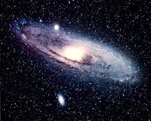

Guia das galáxoas

Pequena Nuvem de Magalhães
Descrição
Grande Nuvem de Magalhães (comumente abreviada como LMC, do inglês Large
Magellanic Cloud) é uma galáxia anã satélite que orbita em torno da Via
Láctea.
Dados interessantes
- É rica em gases e poeira
- Foi batizada por Fernão de Magalhães
-
A Grande Nuvem de Magalhães é uma das galáxias mais próximas da Via
Láctea
Outras galáxias:
Andromeda
Olho Negro,